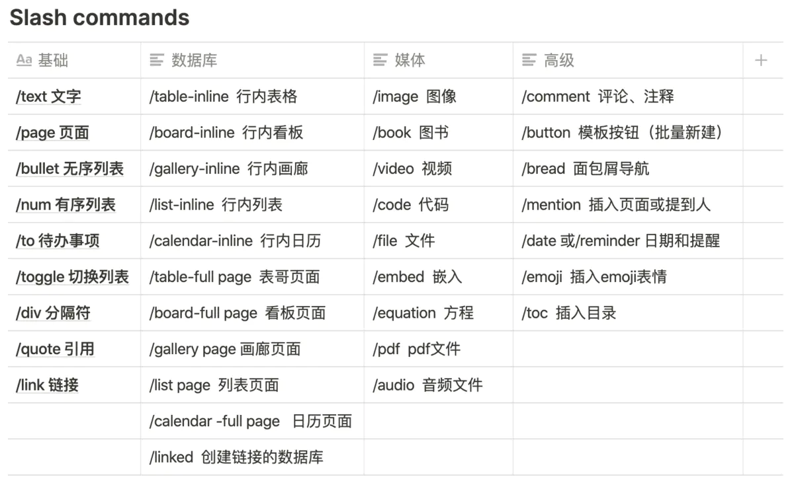

Notion
窗口页面
cmd + n创建新页面（在Mac应用程序中）- 创建新页面时，
cmd + shift + p选择添加页面的位置 cmd + shift + n打开一个新窗口（在Mac应用程序中）cmd + p快速跳转到页面（快速查找）cmd + [返回上一个页面cmd + ]前进前一个打开的页面cmd + shift + l切换暗模式cmd + \切换侧边栏（在Mac应用程序中）
🎒 Tip： 在 : 后键入emoji名称，可以在页面中添加emoji表情。 例如： :apple 🍎 或是 :clapping 👏 。同时按下 ctrl + cmd + 空格 可以打开emoji表情库。
- Refer to a page: method 1: @xxxx; method 2: use
"[[xxxxx]]” Fn + left: go to top page
Markdown样式转换
在文本块输入过程中，尝试以下快捷方式：
**粗体**粗体*斜体*斜体行内代码行内代码~删除线~删除线
在空文本块的开头，尝试以下快捷方式：
- 输入
*-或+后跟空格以创建无序列表 - 输入
[]以创建Todo事项（[]之间没有空格） - 输入
1.后跟空格创建编号列表 - 输入
#后跟空格创建一级标题 - 输入
##后跟空格创建二级标题 - 输入
###后跟空格创建三级标题 - 输入
>后跟空格创建展开清单 - 输入
"后跟空格创建引用内容块
内容创建和编辑
回车插入文本（新建一个block输入文本）cmd + shift + m创建注释--（连续3个 ``）创建分隔符- 选中文本
cmd + b转变成粗体字 - 选中文本
cmd + i转变成斜体字 - 选中文本
cmd + u添加下划线 - 选中文本
cmd + shift + s应用删除线 - 选中文本
cmd + shift + h应用上次使用的颜色或高亮显示 - 选中文本
cmd + k添加链接（在输入框中可以使用cmd + v粘贴链接地址） - 选中文本
cmd + e创建内联行内代码 - 选中文本
cmd + shift + e创建\(equation\) - 按下
Tab进行缩进。注意：对block内父级文本的缩进，会对所有子级文本生效。 例如：- Block 1 ⬅️ 父级文本 Block 2 ⬅️ 子级文本
- 按下
shift + Tab取消缩进。注意：在多行列表（连续的block列表均缩进时）中，取消缩进会使得本行列表内容移至下一行列表内容之后。 - 键入
/turn在block的开头或结尾，将其转换为不同的类型。 注：输入/turn后可以直接键入类型名称。 例如：回电话/turn into checkbox创建待办事项 - 在block的开头或结尾键入
/color来改变文本或是高光的颜色。 （若要取消颜色或是高光，键入/default） 例如：/blue,/redbackfround cmd + option + 0创建文本cmd + option + 1创建1级标题cmd + option + 2创建2级标题cmd + option + 3创建3级标题cmd + option + 4创建待办事项cmd + option + 5创建无序列表cmd + option + 6创建有序列表cmd + option + 7创建切换列表cmd + option + 8创建代码块 (or use/code)cmd + option + 9创建页面（或将光标所在行作为页面创建）cmd+鼠标点击page，可在一个新窗口中打开page（不使当前页跳转）。cmd++放大页面显示比例cmd+-小页面显示比例cmd + shift + u回到上一级页面cmd + option + t可立即打开或关闭页面上的所有切换列表cmd + option + p将block移动到任何页面或数据库- 使用桌面端Notion时，
cmd+l会复制当前所在页面的链接。
拖拽操作
- 按住
option并选择block，然后按住block前的按钮拖拽，复制到指定位置。
编辑和移动blocks（码字过程中）
注：Notion中的所有内容均是block（无论是一段文本，或是图片），以下快捷键可以对选中的所有blocks进行编辑。熟练使用可以提高码字效率，几乎可以实现脱离鼠标。*
esc选择光标所在的block，按下键盘上的方向键可以选择其他相邻的blocks。cmd + a全选光标所在的blocks中的内容。- 选中图片按下
空格全屏显示，再次按下空格取消全屏显示。 - 按住
shift+⬆️、⬇️方向键，扩展blocks的选中范围。 - 使用
cmd+shift+鼠标点击，选中所需的blocks（可以单独选中若干个不相邻的blocks），再次点击可以取消选择。(windowshift + alt + 鼠标点击) - 按住
shift并点击，可选中多个连续的blocks。 backspace或delete删除所选的blocks。- 按下
Enter键，在选中整个block时，进入block内部对文本进行编辑。 cmd+d，复制并粘贴选中的block。shift + 回车在block内另起一行（block内回车）cmd+/激活block的menu按钮菜单，修改选中的（可以是多个）blocks。- 使用此快捷键可修改block的类型、颜色，或是对block进行复制、移动。你可以在弹出的menu小窗口中直接键入action或是color。比如：
- 在board视图中，选中多个卡片，使用
cmd+/可以同时进行修改。例如：
cmd+shift+方向键移动选中的blocks。cmd+Enter，进入页面/page、代办事项的完成/未完成之间的切换/todo、切换列表的展开/隐藏/toggle，以及嵌入图像的全屏显示切换/image。
@指令
- 提到人物，被提到的人将会收到被提及的通知。例如： @马丁爱学习
- 插入页面，输入
@后，在弹出菜单中选择页面 - 设置日期，键入
@+ 任意的日期格式（“yesterday,” “today” 或 “tomorrow,” 甚至是 “next Wednesday”），输入完成后点击日期指令，可以进一步设置提醒等。例如：@Aug 4, 2020 3:00 PM 。 - 添加提醒，键入
@remind+ 任意的日期格式（including “yesterday,” “today,” “tomorrow,” etc.），例如：@remind tomorrow 9am - 若只想输入@符号，可在键入@后按下
esc。（在中文输入中，紧跟在中文后的@符号不会被识别为指令，若要使用@指令，可以空一格后再键入@即可。在输入行内代码 “`”这个上逗号符号同理。）
/斜线指令
注：如果只想输入 / 符号，可用 Esc 取消斜线指令菜单。

其他
cmd + shift + G取消同步